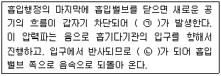
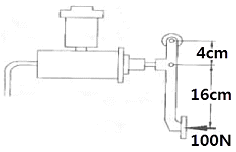
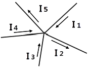
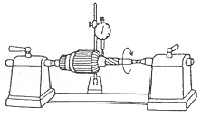

자동차정비기능사 (2016-01-24 기출문제)
1과목: 자동차공학
1. 냉각수 온도센서 고장시 엔진에 미치는 영향으로 틀린 것은?
- 공회전상태가 불안정하게 된다.
- 워밍업 시기에 검은 연기가 배출될 수 있다.
- 배기가스 중에 CO 및 HC가 증가 된다.
- 냉간 시동성이 양호하다.
(정답률: 87%)

2. 디젤 연소실의 구비조건 중 틀린 것은?
- 연소시간이 짧을 것
- 열효율이 높을 것
- 평균유효 압력이 낮을 것
- 디젤노크가 적을 것
(정답률: 77%)
3. 베어링에 작용하중이 80kgf 힘을 받으면서 베어링 면의 미끄럼속도가 30m/s 일 때 손실마력은?(단, 마찰계수는 0.2 이다.)
- 4.5PS
- 6.4PS
- 7.3PS
- 8.2PS.
(정답률: 62%)
4. 자동차의 앞면에 안개등을 설치 할 경우에 해당되는 기준으로 틀린 것은?
- 비추는 방향은 앞면 진행방향을 향하도록 할 것
- 후미등이 점등된 상태에서 전조등과 연동하여 점등 또는 소등 할 수 있는 구조일 것
- 등광색은 백색 또는 황색으로 할 것
- 등화의 중심점은 차량중심선을 기준으로 좌우가 대칭이 되도록 할 것
(정답률: 75%)
5. 디젤기관에서 기계식 독립형 연료 분사펌프의 분사시기 조정방법으로 맞는 것은?
- 거버너의 스프링을 조정
- 랙과 피니언으로 조정
- 피니언과 슬리브로 조정
- 펌프와 타이밍 기어의 커플링으로 조정
(정답률: 65%)
6. 4기통인 4행정사이클 기관에서 회전수가 1800rpm, 행정이 75mm인 피스톤의 평균속도는?
- 2.55m/sec
- 2.45m/sec
- 2.35m/sec
- 4.5m/sec
(정답률: 36%)
7. 가솔린 노킹(knocking)의 방지책에 대한 설명 중 잘못된 것은?
- 압축비를 낮게 한다.
- 냉각수의 온도를 낮게 한다.
- 화염전파 거리를 짧게 한다.
- 착화지연을 짧게 한다.
(정답률: 50%)
8. 연료의 온도가 상승하여 외부에서 불꽃을 가까이 하지 않아도 자연히 발화되는 최저온도는?
- 인화점
- 착화점
- 발열점
- 확산점
(정답률: 81%)
9. 점화순서가 1-3-4-2 인 4행정 기관의 3번 실린더가 압축 행정을 할 때 1번 실린더는?
- 흡입 행정
- 압축 행정
- 폭발 행정
- 배기 행정
(정답률: 66%)
10. 기관의 윤활유 유압이 높을 때의 원인과 관계없는 것은?
- 베어링과 축의 간격이 클 때
- 유압조정밸브 스프링의 장력이 강할 때
- 오일파이프의 일부가 막혔을 때
- 윤활유의 점도가 높을 때
(정답률: 56%)
11. 연소실 체적이 40cc 이고, 총 배기량이 1280cc 인 4기통 기관의 압축비는?
- 6 : 1
- 9 : 1
- 18 : 1
- 33 : 1
(정답률: 60%)
12. 전자제어 기관의 흡입 공기량 측정에서 출력이 전기 펄스(Pulse, digital) 신호인 것은?
- 벤(Vane)식
- 칼만(Karman) 와류식
- 핫 와이어(hot wire)식
- 맵센서식(MAP sensor)식
(정답률: 64%)
13. 실린더 지름이 80mm이고 행정이 70mm인 엔진의 연소실 체적이 50cc인 경우의 압축비는?
- 8
- 8.5
- 7
- 7.5
(정답률: 40%)
14. 내연기관과 비교하여 전기모터의 장점 중 틀린 것은?
- 마찰이 적기 때문에 손실되는 마찰열이 적게 발생한다.
- 후진기어가 없어도 후진이 가능하다.
- 평균 효율이 낮다.
- 소음과 진동이 적다.
(정답률: 67%)
15. 디젤기관의 연료분사 장치에서 연료의 분사량을 조절 하는 것은?
- 연료 여과기
- 연료 분사노즐
- 연료 분사펌프
- 연료 공급펌프
(정답률: 68%)
16. 부동액 성분의 하나로 비등점이 197.2℃, 응고점이 -50℃ 인 불연성 포화액인 물질은?
- 에틸렌 글리콜
- 메탄올
- 글리세린
- 변성알콜
(정답률: 70%)
17. 블로우다운(blow down) 현상에 대한 설명으로 옳은 것은?
- 밸브와 밸브시트 사이에서의 가스 누출현상
- 압축행정시 피스톤과 실린더 사이에서 공기가 누출되는 현상
- 피스톤이 상사점 근방에서 흡·배기밸브가 동시에 열려 배기 잔류가스를 배출시키는 현상
- 배기행정 초기에 배기밸브가 열려 배기가스 자체의 압력에 의하여 배기가스가 배출되는 현상
(정답률: 57%)
18. LPG차량에서 연료를 충전하기 위한 고압용기는?
- 봄 베
- 베이퍼라이저
- 슬로우 컷 솔레노이드
- 연료 유니온
(정답률: 74%)
19. 가솔린을 완전 연소시키면 발생되는 화합물은?
- 이산화탄소와 아황산
- 이산화탄소와 물
- 일산화탄소와 이산화탄소
- 일산화탄소와 물
(정답률: 70%)
20. 흡기 시스템의 동적효과 특성을 설명한 것 중 ( )안에 알맞은 단어는?

- (ㄱ) 간섭파, (ㄴ) 유도파
- (ㄱ) 서지파, (ㄴ) 정압파
- (ㄱ) 정압파, (ㄴ) 부압파
- (ㄱ) 부압파, (ㄴ) 서지파
(정답률: 66%)
2과목: 자동차정비 및 안전기준
21. 가솔린 기관에서 발생되는 질소산화물에 대한 특징을 설명한 것 중 틀린 것은?
- 혼합비가 농후하면 발생농도가 낮다.
- 점화시기가 빠르면 발생농도가 낮다.
- 혼합비가 일정할 때 흡기다기관의 부압은 강한 편이 발생농도가 낮다.
- 기관의 압축비가 낮은 편이 발생농도가 낮다.
(정답률: 39%)
22. 피스톤 간극이 크면 나타나는 현상이 아닌 것은?
- 블로바이가 발생한다.
- 압축압력이 상승한다.
- 피스톤 슬랩이 발생한다.
- 기관의 기동이 어려워진다.
(정답률: 67%)
23. 가솔린 기관의 연료펌프에서 연료라인 내의 압력이 과도하게 상승하는 것을 방지하기 위한 장치는?
- 체크밸브(Check Valve)
- 릴리프밸브(Relief Valve)
- 니들밸브(Needle Valve)
- 사일렌서(Silencer)
(정답률: 72%)
24. 중·고속 주행시 연료소비율의 향상과 기관의 소음을 줄일 목적으로 변속기의 입력회전수 보다 출력회전수를 빠르게 하는 장치는?
- 클러치 포인트
- 오버 드라이브
- 히스테리시스
- 킥 다운
(정답률: 69%)
25. 전자제어 현가장치의 출력부가 아닌 것은?
- TPS
- 지시등, 경고등
- 액추에이터
- 고장코드
(정답률: 62%)
26. 추진축의 자재이음은 어떤 변화를 가능하게 하는가?
- 축의 길이
- 회전 속도
- 회전축의 각도
- 회전 토크
(정답률: 59%)
27. 휠얼라인먼트를 사용하여 점검할 수 있는 것으로 가장 거리가 먼 것은?
- 토(toe)
- 캠버
- 킹핀 경사각
- 휠 밸런스
(정답률: 60%)
28. 전동식 동력 조향장치(MDPS : Motor Driven Power Steering)의 제어 항목이 아닌 것은?
- 과부하보호 제어
- 아이들-업 제어
- 경고등 제어
- 급가속 제어
(정답률: 45%)
29. 클러치 작동기구 중에서 세척유로 세척 하여서는 안 되는 것은?
- 릴리스 포크
- 클러치 커버
- 릴리스 베어링
- 클러치 스프링
(정답률: 72%)
30. 조향 유압 계통에 고장이 발생되었을 때 수동 조작을 이행하는 것은?
- 밸브 스풀
- 볼 조인트
- 유압펌프
- 오리피스
(정답률: 44%)
31. 공기 브레이크에서 공기압을 기계적 운동으로 바꾸어 주는 장치는?
- 릴레이 밸브
- 브레이크 슈
- 브레이크 밸브
- 브레이크 챔버
(정답률: 62%)
32. 자동변속기의 장점이 아닌 것은?
- 기어변속이 간단하고, 엔진 스톨이 없다.
- 구동력이 커서 등판 발진이 쉽고, 등판능력이 크다.
- 진동 및 충격 흡수가 크다.
- 가속성이 높고, 최고속도가 다소 낮다.
(정답률: 59%)
33. 다음 중 전자제어 동력 조향장치(EPS)의 종류가 아닌 것은?
- 속도 감응식
- 전동 펌프식
- 공압 충격식
- 유압 반력 제어식
(정답률: 49%)
34. 자동변속기에서 토크 컨버터내의 록업 클러치(댐퍼클러치)의 작동조건으로 거리가 먼 것은?
- “D"레인지에서 일정 차속(약 70km/h 정도)
- 냉각수 온도가 충분히(약 75℃ 정도) 올랐을 때
- 브레이크 페달을 밟지 않을 때
- 발진 및 후진 시
(정답률: 59%)
35. ABS의 구성품 중 휠 스피드 센서의 역할은?
- 바퀴의 록(lock) 상태 감지
- 차량의 과속을 억제
- 브레이크 유압 조정
- 라이닝의 마찰 상태 감지
(정답률: 66%)
36. 다음에서 스프링의 진동 중 스프링 위 질량의 진동과 관계 없는 것은?
- 바운싱(bouncing)
- 피칭(pitching)
- 휠 트램프(wheel tramp)
- 롤링(rolling)
(정답률: 72%)
37. 변속장치에서 동기물림 기구에 대한 설명으로 옳은 것은?
- 변속하려는 기어와 메인 스플라인과의 회전수를 같게 한다.
- 주축기어의 회전 속도를 부축기어의 회전속도 보다 빠르게 한다.
- 주축기어와 부축기어의 회전수를 같게 한다.
- 변속하려는 기어와 슬리브와의 회전수에는 관계없다.
(정답률: 45%)
38. 자동차로 서울에서 대전까지 187.2km를 주행 하였다. 출발시간은 오후 1시 20분, 도착시간은 오후 3시 8분이었다면 평균 주행속도는?
- 약 126.5km/h
- 약 104 km/h
- 약 156km/h
- 약 60.78km/h
(정답률: 61%)
39. 유압 브레이크는 무슨 원리를 응용한 것인가?
- 아르키메데스의 원리
- 베르누이의 원리
- 아인슈타인의 원리
- 파스칼의 원리
(정답률: 80%)
40. 그림과 같은 브레이크 페달에 100N의 힘을 가하였을 때 피스톤의 면적이 5cm2라고 하면 작동유압은?

- 100kPa
- 500kPa
- 1000kPa
- 5000kPa
(정답률: 50%)
3과목: 안전관리
41. 다음은 배터리 격리판에 대한 설명이다. 틀린 것은?
- 격리판은 전도성이 있어야 한다.
- 전해액에 부식되지 않아야 한다.
- 전해액의 확산이 잘 되어야 한다.
- 극판에서 이물질을 내뿜지 않아야 한다.
(정답률: 66%)
42. 자동차용 납산배터리를 급속충전을 할 때 주의사항으로 틀린 것은?
- 충전시간을 가능한 길게 한다.
- 통풍이 잘되는 곳에서 충전한다.
- 충전 중 배터리에 충격을 가하지 않는다.
- 전해액의 온도가 약 45℃가 넘지 않도록 한다.
(정답률: 79%)
43. 스파크플러그 표시기호의 한 예이다. 열가를 나타내는 것은?
- P
- 6
- E
- S
(정답률: 71%)
44. 팽창밸브식이 사용되는 에어컨 장치에서 냉매가 흐르는 경로로 맞는 것은?
- 압축기 → 증발기 → 응축기 → 팽창밸브
- 압축기 → 응축기 → 팽창밸브 → 증발기
- 압축기 → 팽창밸브 → 응축기 → 증발기
- 압축기 → 증발기 → 팽창밸브 → 응축기
(정답률: 77%)
45. 연료 탱크의 연료량을 표시하는 연료계의 형식 중 계기식의 형식에 속하지 않는 것은?
- 밸런싱 코일식
- 연료면 표시기식
- 서미스터식
- 바이메탈 저항식
(정답률: 40%)
46. AC 발전기의 출력변화 조정은 무엇에 의해 이루어 지는가?
- 엔진의 회전수
- 배터리의 전압
- 로터의 전류
- 다이오드 전류
(정답률: 51%)
47. 그림에서 I1=5A, I2=2A, I3=3A, I4=4A라고 하면 I5에 흐르는 전류(A)는?

- 8
- 4
- 2
- 10
(정답률: 66%)
48. 플레밍의 왼손법칙을 이용한 것은?
- 충전기
- DC 발전기
- AC 발전기
- 전동기
(정답률: 69%)
49. 기동전동기를 기관에서 떼어내고 분해하여 결함 부분을 점검하는 그림이다. 옳은 것은?

- 전기자 축의 휨 상태점검
- 전기자 축의 마멸 점검
- 전기자 코일 단락 점검
- 전기자 코일 단선 점검
(정답률: 73%)
50. 에어컨의 구성부품 중 고압의 기체 냉매를 냉각시켜 액화시키는 작용을 하는 것은?
- 압축기
- 응축기
- 팽창밸브
- 증발기
(정답률: 69%)
51. 드릴링 머신 작업을 할 때 주의사항으로 틀린 것은?
- 드릴은 주축에 튼튼하게 장치하여 사용한다.
- 공작물을 제거할 때는 회전을 완전히 멈추고 한다.
- 가공 중에 드릴이 관통했는지를 손으로 확인한 후 기계를 멈춘다.
- 드릴의 날이 무디어 이상한 소리가 날 때는 회전을 멈추고 드릴을 교환하거나 연마한다.
(정답률: 86%)
52. 산업체에서 안전을 지킴으로써 얻을 수 있는 이점으로 틀린 것은?
- 직장의 신뢰도를 높여준다.
- 상하 동료 간에 인간관계가 개선된다.
- 기업의 투자 경비가 늘어난다.
- 회사 내 규율과 안전수칙이 준수되어 질서유지가 실현된다.
(정답률: 75%)
53. 색에 맞는 안전표시가 잘못 짝지어진 것은?
- 녹색 - 안전, 피난, 보호표시
- 노란색 - 주의, 경고 표시
- 청색 - 지시, 수리중, 유도 표시
- 자주색 - 안전지도 표시
(정답률: 73%)
54. 작업안전상 드라이버 사용 시 유의사항이 아닌 것은?
- 날끝이 홈의 폭과 길이가 같은 것을 사용한다.
- 날끝이 수평이어야 한다.
- 작은 부품은 한손으로 잡고 사용한다.
- 전기 작업 시 금속부분이 자루 밖으로 나와 있지 않아야 한다.
(정답률: 80%)
55. 지렛대를 사용할 때 유의사항으로 틀린 것은?
- 깨진 부분이나 마디 부분에 결함이 없어야 한다.
- 손잡이가 미끄러지지 않도록 조치를 취한다.
- 화물의 치수나 중량에 적합한 것을 사용한다.
- 파이프를 철제 대신 사용한다.
(정답률: 84%)
56. 수동변속기 작업과 관련된 사항 중 틀린 것은?
- 분해와 조립 순서에 준하여 작업한다.
- 세척이 필요한 부품은 반드시 세척한다.
- 록크 너트는 재사용 가능하다.
- 싱크로나이저 허브와 슬리브는 일체로 교환한다.
(정답률: 74%)
57. 물건을 운반 작업할 때 안전하지 못한 경우는?
- LPG 봄베, 드럼통을 굴려서 운반한다.
- 공동 운반에서는 서로 협조하여 운반한다.
- 긴 물건을 운반할 때는 앞쪽을 위로 올린다.
- 무리한 자세나 몸가짐으로 물건을 운반하지 않는다.
(정답률: 78%)
58. 연료 압력 측정과 진공 점검 작업 시 안전에 관한 유의사항이 잘못 설명된 것은?
- 기관 운전이나 크랭킹 시 회전 부위에 옷이나 손 등이 접촉하지 않도록 주의한다.
- 배터리 전해액이 옷이나 피부에 닿지 않도록 한다.
- 작업 중 연료가 누설되지 않도록 하고 화기가 주위에 있는지 확인한다.
- 소화기를 준비한다.
(정답률: 62%)
59. 전동기나 조정기를 청소한 후 점검하여야 할 사항으로 옳지 않은 것은?
- 연결의 견고성 여부
- 과열 여부
- 아크 발생 여부
- 단자부 주유 상태 여부
(정답률: 64%)
60. 자동차기관이 과열된 상태에서 냉각수를 보충할 때 적합한 것은?
- 시동을 끄고 즉시 보충한다.
- 시동을 끄고 냉각시킨 후 보충한다.
- 기관을 가감속하면서 보충한다.
- 주행하면서 조금식 보충한다.
(정답률: 84%)